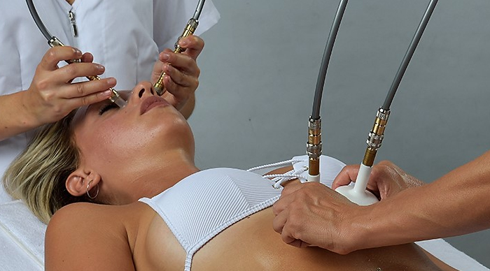
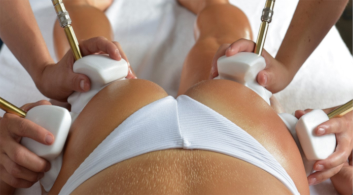

- Richiama molto sangue arterioso nella zona trattata creando una forte ossigenazione, idratazione e detossinazione del tessuto;
- Consente l’esecuzione di un massaggio metamerico, tramite il quale è possibile ripristinare la corretta funzionalità degli organi e allentare le tensioni. Un organo che non lavora bene è la causa primaria di vari inestetismi;
- Trattando l’addome, si può effettuare uno sblocco del diaframma, così da consentire una respirazione più ampia e completa, con un incremento notevole dell’ossigenazione;
- Grazie all’estrema piacevolezza del trattamento, si favorisce la riduzione dello stress, fonte primaria di molteplici problematiche (intossicazione dell’organismo, dovuto ad un incremento dei radicali liberi, squilibri del sistema endocrino, disagi psicofisici);
- Favorisce la produzione di collagene ed elastina da parte dei fibroblasti, effettuando un vero e proprio stretching cellulare.


L' azione simultanea con quattro manipoli favorisce un drenaggio più veloce e duraturo.
Fin dalla prima seduta si avranno gambe più sgonfie e una sensazione di benessere e leggerezza su tutto il corpo
Fin dalla prima seduta si avranno gambe più sgonfie e una sensazione di benessere e leggerezza su tutto il corpo